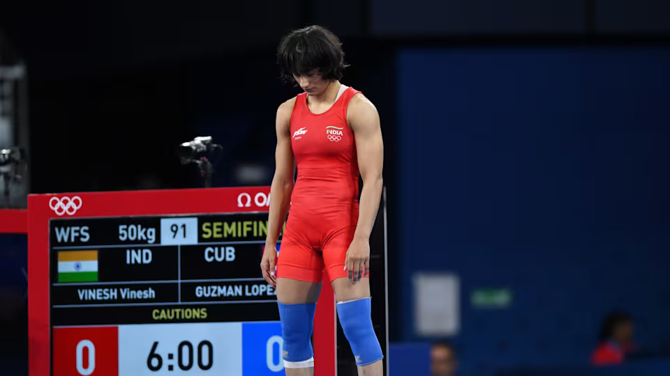

NSSV News
NSSV News

In a heartbreaking turn of events, Vinesh Phogat has been disqualified from the Paris 2024 Olympics wrestling competition for being overweight in the women’s 50kg category on the morning of her gold medal bout on Wednesday.
At Paris 2024, each weight category is organised over two competition days. The medical control and weigh-in for each category takes place in the morning of the first competition day. On the second competition day, wrestlers who have qualified for the finals and repechage are weighed in again.
“It is with regret that the Indian contingent shares news of the disqualification of Vinesh Phogat from the women’s wrestling 50kg class,” the Indian Olympic Association (IOA) said in a statement. “Despite the best efforts by the team through the night, she weighed in a few grams over 50kg this morning.
“No further comments will be made by the contingent at this time. The Indian team requests you respect Vinesh’s privacy. It would like to focus on the competitions on hand.”
Vinesh Phogat was eligible for competition on the opening day but weighed just over 50kg on Wednesday morning.
According to wrestling rules, if a wrestler fails the weigh-in on either day of the competition (preliminaries, and repechage and final rounds), they are eliminated from the event.
Vinesh, who was unseeded, had qualified for the final after winning three bouts on Tuesday.
The three-time Commonwealth Games champion defeated top seed and defending Olympic champion Yui Susaki of Japan in the opening round. In the quarter-finals, she got the better of former European champion Oksana Livach of Ukraine before besting reigning Pan American Games champion Yusneylis Guzman of Cuba in the semis.
Vinesh Phogat was slated to face USA’s Sarah Hildebrandt, seeded sixth, in the final. Hildebrandt will now fight Yusneylis Guzman for the gold medal while Yui Susaki and Oksana Livach will compete for bronze.